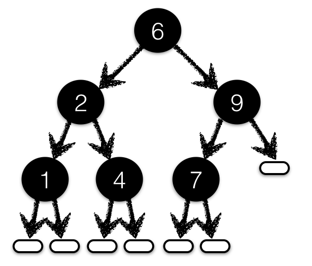

前面我们为 函数 添加精化类型，用它说明输入必须满足的前置条件，以及输出应该满足的后置条件。实际编程时，我们也经常希望某种 数据类型本身 始终满足特定条件。这时，可以直接为 data 定义添加精化：把约束放到构造数据的入口，让不合法的值无法通过检查。
译者说明：这里的“无法构造”指在 LiquidHaskell 所检查的代码与可信假设范围内，构造操作必须满足规格。来自文件、网络或其他未验证代码的数据，仍然需要在边界处校验。
再看稀疏向量#
第一个例子仍然是上一章的稀疏向量。之前的类型别名 SparseN 能表达要求，但使用起来不太方便：从表示本身无法直接取得向量的 维度。现在定义一种把维度也存下来的数据类型：
data Sparse a = SP { spDim :: Int
, spElems :: [(Int, a)] }
因此，一个稀疏向量由两部分组成：维度，以及一组“下标—值”二元组。没有出现在列表里的下标，默认对应 0，或元素类型 a 中相应的零值。
一个 合法 的 Sparse 必须满足两个关键条件：spDim 中的维度非负；spElems 中每个下标都在合法范围内，也就是大于等于 0、严格小于维度。仅靠这里的普通 Haskell 类型，不容易直接保证“不合法的向量根本无法表示”。
原注：常见做法是隐藏数据构造器，使用抽象类型和智能构造器。不过，智能构造器是否真的建立了所需不变量，通常仍然依靠实现者保证。
把数据不变量写进定义#
LiquidHaskell 允许我们直接给数据定义添加精化：
{-@ data Sparse a = SP { spDim :: Nat
, spElems :: [(Btwn 0 spDim, a)]} @-}
这里仍使用之前的类型别名：
{-@ type Nat = {v:Int | 0 <= v} @-}
{-@ type Btwn Lo Hi = {v:Int | Lo <= v && v < Hi} @-}
数据构造器也有精化类型#
在内部，上面的定义会转成构造器 SP 的精化类型：
-- Generated Internal representation
data Sparse a where
SP :: spDim:Nat
-> spElems:[(Btwn 0 spDim, a)]
-> Sparse a
也就是说，给 SP 的参数规定好精化类型，就相当于自动把它变成了一个 智能构造器。每次创建 Sparse 时，都必须证明这些条件成立。因此，下面这个值可以通过检查：
okSP :: Sparse String
okSP = SP 5 [ (0, "cat")
, (3, "dog") ]
下面这个值则会被拒绝，因为维度为 5 时，下标 6 已经越界：
badSP :: Sparse String
badSP = SP 5 [ (0, "cat")
, (6, "dog") ]
把字段当作度量函数#
我们经常需要表示“维度恰好为 N 的稀疏向量”。和之前的 vlen 一样，字段名 spDim 也可以作为 度量函数，在精化谓词里使用：
{-@ type SparseN a N = {v:Sparse a | spDim v == N} @-}
原注：在精化的
data定义 内部，spDim指当前字段的值；在定义 外部，它指读取该字段的选择函数，或者相应的逻辑度量函数。因此，spDim v表示“向量v的维度”。
稀疏向量的点积#
下面计算普通向量与稀疏向量的点积：
{-@ dotProd :: x:Vector Int -> SparseN Int (vlen x) -> Int @-}
dotProd x (SP _ y) = go 0 y
where
go sum ((i, v) : y') = go (sum + (x ! i) * v) y'
go sum [] = sum
规格说明两个向量的维度相同。结合 Sparse 的数据不变量，LiquidHaskell 能推出：列表 y 里每个 (i, v) 的 i 都落在向量 x 的边界内。因此，x ! i 的访问是安全的。
用折叠实现点积#
之前使用 fold 的写法，也可以迁移到这个新表示上：
{-@ dotProd' :: x:Vector Int -> SparseN Int (vlen x) -> Int @-}
dotProd' x (SP _ y) = foldl' body 0 y
where
body sum (i, v) = sum + (x ! i) * v
检查这段代码时，LiquidHaskell 会为 foldl' 的类型参数自动实例化精化条件。这样既省去了重复标注，也让我们继续使用熟悉的多态、高阶组合函数。
练习：校验外部输入 ★#
对于程序 内部 计算出来的数据，不变量可以沿着类型和函数调用传播。但从“现实世界”进入程序的数据，不能凭空获得这些保证。必须先写一个校验函数，检查条件成立之后，才能构造 Sparse。
请为 fromList 补上规格和实现，使下面的代码通过检查。
提示： 检查 elts 中 所有 下标是否小于 dim。一种简单做法是先生成 Maybe [(Int, a)]：全部合法时返回原来的二元组列表 Just ...，否则返回 Nothing。
译者说明：完整的不变量还要求
dim >= 0，并要求每个下标i >= 0。原提示强调的是上界，完成校验时不要漏掉这些条件。另外，fromJust自己也需要非空前提；本练习应让“成功构造”的条件足够明确。
fromList :: Int -> [(Int, a)] -> Maybe (Sparse a)
fromList dim elts = undefined
{-@ test1 :: SparseN String 3 @-}
test1 = fromJust $ fromList 3 [(0, "cat"), (2, "mouse")]
练习：稀疏向量相加#
为 plus 编写规格和实现：它接收两个 维度相同 的稀疏向量，结果仍然具有相同维度。完成后，下面的代码应该通过类型检查。
plus :: (Num a) => Sparse a -> Sparse a -> Sparse a
plus x y = undefined
{-@ test2 :: SparseN Int 3 @-}
test2 = plus vec1 vec2
where
vec1 = SP 3 [(0, 12), (2, 9)]
vec2 = SP 3 [(0, 8), (1, 100)]
有序列表#
第二个例子换一个问题：如何表示一个 已经排好序 的序列？先定义一种与普通列表很相似的数据结构：
data IncList a =
Emp
| (:<) { hd :: a, tl :: IncList a }
infixr 9 :<
普通 Haskell 类型并没有说明元素是否有序。我们可以给尾部 tl 中的 每个 元素加上精化条件，要求它不小于头部 hd：
{-@ data IncList a =
Emp
| (:<) { hd :: a, tl :: IncList {v:a | hd <= v}} @-}
译者说明：代码用的是
hd <= v，所以这里表示非递减顺序，允许相等的元素。原文此处用“greater than”描述，中文按实际规格解释为“大于等于”。
构造时就保证有序#
同样，精化的数据定义会在内部生成一个带约束的“智能”构造器：
-- Generated Internal representation
data IncList a where
Emp :: IncList a
(:<) :: hd:a -> tl:IncList {v:a | hd <= v} -> IncList a
因此，只有合法的有序列表才能通过检查：
okList = 1 :< 2 :< 3 :< Emp -- accepted by LH
badList = 2 :< 1 :< 3 :< Emp -- rejected by LH
能 描述 有序列表只是第一步。接下来实现几个教科书里的排序算法，看看怎样在构造结果时 建立 这个不变量。
插入排序#
先用插入排序把普通列表 [a] 转成有序列表 IncList a：
insertSort :: (Ord a) => [a] -> IncList a
insertSort [] = Emp
insertSort (x:xs) = insert x (insertSort xs)
主要工作交给 insert：它把一个元素放进有序列表中的正确位置。LiquidHaskell 能推断出，给 insert 一个元素和一个有序列表，得到的仍然是有序列表。
insert :: (Ord a) => a -> IncList a -> IncList a
insert y Emp = y :< Emp
insert y (x :< xs)
| y <= x = y :< x :< xs
| otherwise = x :< insert y xs
练习：用 foldr 改写插入排序#
补全下面的实现，用 foldr 代替 insertSort 中显式写出的递归。
insertSort' :: (Ord a) => [a] -> IncList a
insertSort' xs = foldr f b xs
where
f = undefined -- Fill this in
b = undefined -- Fill this in
归并排序#
归并排序同样可以分成三步。第一步，把输入拆成两半：
split :: [a] -> ([a], [a])
split (x:y:zs) = (x:xs, y:ys)
where
(xs, ys) = split zs
split xs = (xs, [])
译者说明：列表长度为奇数时，两半的长度会相差一个元素；不必恰好相等。
第二步，把两个有序列表合并成一个有序列表：
merge :: (Ord a) => IncList a -> IncList a -> IncList a
merge xs Emp = xs
merge Emp ys = ys
merge (x :< xs) (y :< ys)
| x <= y = x :< merge xs (y :< ys)
| otherwise = y :< merge (x :< xs) ys
merge _ _ = Emp
最后，把这些步骤组合起来：用 split 分解问题，递归排序，再用 merge 合并结果。
mergeSort :: (Ord a) => [a] -> IncList a
mergeSort [] = Emp
mergeSort [x] = x :< Emp
mergeSort xs = merge (mergeSort ys) (mergeSort zs)
where
(ys, zs) = split xs
练习：快速排序 ★★#
下面的 quickSort 为什么会被 LiquidHaskell 拒绝？修改它，让它通过检查。
提示： 先想清楚 append 需要满足什么条件，才能保证整个 quickSort 的结果有序。假设 ys 和 zs 各自有序，是否就意味着 append x ys zs 也有序？当然不是。还缺少什么条件？把这个直觉写进 append 的 规格，再让实现满足规格。
quickSort :: (Ord a) => [a] -> IncList a
quickSort [] = Emp
quickSort (x:xs) = append x lessers greaters
where
lessers = quickSort [y | y <- xs, y < x ]
greaters = quickSort [z | z <- xs, z >= x]
{-@ append :: x:a -> IncList a
-> IncList a
-> IncList a
@-}
append z Emp ys = z :< ys
append z (x :< xs) ys = x :< append z xs ys
有序树#
最后来看二叉搜索树：
data BST a = Leaf
| Node { root :: a
, left :: BST a
, right :: BST a }
二叉搜索树的关键性质是：对每个节点而言，左子树中的所有值都 严格小于 root，右子树中的所有值都 严格大于 root。
这个顺序不变量让查找变得简单。如果当前树是 Leaf，说明值不存在；如果目标等于根节点，就找到了；如果目标小于根节点，继续查左子树；如果大于根节点，继续查右子树。

上图用 1 到 9 中的一部分整数标记节点。对应的 Haskell 值可以写成：
okBST :: BST Int
okBST = Node 6
(Node 2
(Node 1 Leaf Leaf)
(Node 4 Leaf Leaf))
(Node 9
(Node 7 Leaf Leaf)
Leaf)
用精化的数据定义表达树的不变量#
普通 Haskell 类型没有提到顺序要求，因此也无法阻止我们创建违反顺序的 BST。可以用精化的数据定义补上这层约束。类型别名 BSTL 表示所有值都小于 X 的树，BSTR 表示所有值都大于 X 的树。
原注：也可以把
BSTL和BSTR的内容直接写进BST定义。不过，这两个别名在后面还会用到。
{-@ data BST a = Leaf
| Node { root :: a
, left :: BSTL a root
, right :: BSTR a root } @-}
{-@ type BSTL a X = BST {v:a | v < X} @-}
{-@ type BSTR a X = BST {v:a | X < v} @-}
与前面的例子一样，这会为 BST 生成带精化类型的智能构造器：
data BST a where
Leaf :: BST a
Node :: r:a -> BST {v:a| v < r}
-> BST {v:a | r < v}
-> BST a
这样就能拒绝不合法的树。例如，下面的 69 出现在根节点 66 的左子树里，违反了顺序不变量：
badBST = Node 66
(Node 4
(Node 1 Leaf Leaf)
(Node 69 Leaf Leaf)) -- Out of order, rejected
(Node 99
(Node 77 Leaf Leaf)
Leaf)
练习：重复元素#
一个满足上述规格的 BST Int 能否包含重复元素？
查找元素#
现在编写创建和操作这些树的函数。首先判断某个值是否在树中：
mem :: (Ord a) => a -> BST a -> Bool
mem _ Leaf = False
mem k (Node k' l r)
| k == k' = True
| k < k' = mem k l
| otherwise = mem k r
单元素树#
再做一个简单的热身：用给定元素创建一棵只有一个节点的树。
one :: a -> BST a
one x = Node x Leaf Leaf
插入元素#
下面把一个元素添加到 BST 中：
原注：作者编写这个例子时，曾不小心把
k和k'写反，LiquidHaskell 随即指出了错误。
add :: (Ord a) => a -> BST a -> BST a
add k' Leaf = one k'
add k' t@(Node k l r)
| k' < k = Node k (add k' l) r
| k < k' = Node k l (add k' r)
| otherwise = t
删除最小元素#
接下来编写删除 最小元素 的函数。它同时返回两样东西：最小元素，以及删除这个元素后剩下的树。
怎样描述“返回的元素确实是最小的”？只要说明剩余树里的每个元素都大于它即可。为此，先定义一个辅助类型：
原注：专门定义辅助类型有些繁琐。理想情况下，可以直接使用普通二元组，再说明两个分量之间的依赖关系。抽象精化提供了表达这种关系的方法。
data MinPair a = MP { mElt :: a, rest :: BST a }
给这个类型添加精化，就能说明 mElt 小于 rest 中的所有元素：
{-@ data MinPair a = MP { mElt :: a, rest :: BSTR a mElt} @-}
现在实现生成 MinPair 的函数：
delMin :: (Ord a) => BST a -> MinPair a
delMin (Node k Leaf r) = MP k r
delMin (Node k l r) = MP k' (Node k l' r)
where
MP k' l' = delMin l
delMin Leaf = die "Don't say I didn't warn ya!"
练习：删除指定元素#
利用 delMin 补全 del。如果指定元素存在，就将它从树中删除。
del :: (Ord a) => a -> BST a -> BST a
del k' t@(Node k l r) = undefined
del _ Leaf = Leaf
练习：安全地删除最小元素 ★#
delMin 只对非空树有意义。请先阅读下一章的度量函数，学习如何规定并验证“只接收非空树”，再把这个方法应用到这里，证明 delMin 中调用 die 的分支不会到达。
练习：利用二叉搜索树排序#
补全 toIncList，得到基于二叉搜索树的排序函数 bstSort。
bstSort :: (Ord a) => [a] -> IncList a
bstSort = toIncList . toBST
toBST :: (Ord a) => [a] -> BST a
toBST = foldr add Leaf
toIncList :: BST a -> IncList a
toIncList (Node x l r) = undefined
toIncList Leaf = undefined
提示： 先完成快速排序中的练习，再做这道题会更容易。注意，toIncList 的签名里没有 Ord 约束，所以你 不能，也不需要 再调用一个依赖比较操作的排序过程。树本身已经包含了顺序信息。
回顾#
这一章介绍了如何给数据类型定义添加精化，以表达较复杂的不变量。内部实现方式是强化数据构造器的类型，让构造器自动具备“智能”：任何违反不变量的构造都无法通过验证。后面的案例还会继续使用这个方法。
本章也反复遇到一个不太方便的地方：仅仅为了表达额外约束，我们不得不重新定义已有的数据结构。例如，另造一种列表，重复定义空列表和非空列表构造器；为了实现 delMin，又另造一种二元组。
这种重复很繁琐。我们希望直接把所需不变量附加到 现有 类型上，从而复用已有实现。抽象精化朝这个方向更进一步：可以把精化条件从数据类型或函数定义中抽象出来，正如我们把 [a] 或 BST a 中的元素类型 a 抽象出来一样。